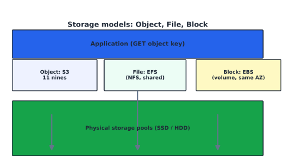

Storage Administration#
Learning Objectives#
Recall the storage hierarchy (latency/throughput/persistence/cost).
Distinguish object, file, and block storage.
Read storage performance (IOPS, throughput, latency).
Manage Amazon S3 (object), Amazon EBS (block), Amazon EFS (file).
The Storage Hierarchy#
Faster/smaller/less-durable sits on top; slower/larger/cheaper sits below.
{kind=link}

Fig. 13 Object storage spans app requests down to physical pools; block/file/object are access abstractions.#
Medium |
Latency |
Persistence |
Typical tier |
|---|---|---|---|
registers/cache |
ns |
volatile |
CPU |
RAM |
ns–µs |
volatile |
running processes |
SSD/NVMe |
low |
persistent |
DB/WAL |
SAN/NAS |
ms |
persistent |
shared |
Object storage |
ms–s |
durable |
backups/media |
Tape / cold archive |
s–hrs |
durable |
long-term |
Object vs. File vs. Block#
Aspect |
Block |
File |
Object |
|---|---|---|---|
Interface |
raw disk → mounted FS |
shared filesystem (NFS/SMB) |
HTTP REST API (GET/PUT key) |
Address |
block/LUN |
directory path |
bucket + object key |
Metadata |
none inherent |
metadata in FS |
custom user metadata |
Scalability |
single host |
shared, grows |
virtually unbounded |
AWS service |
EBS |
EFS |
S3 |
Storage Performance#
IOPS = I/O operations per second (random I/O).
Throughput = MB/s (large sequential I/O).
Latency = time per single I/O (ms).
Latency is the floor; IOPS = 1/latency for a single stream; throughput = IOPS x block size.
EBS-optimized instance types give the EC2 host dedicated throughput to EBS (decoupled from the network interface → lower latency).
Amazon S3#
Amazon S3 stores objects (key + value + metadata) with eleven-9s durability.
Concept |
Detail |
|---|---|
Bucket |
container, globally unique name |
Object |
key + data + metadata; keys may contain |
Versioning |
keep multiple versions (guards accidental deletion) |
Storage classes (cost vs. access frequency)#
Class |
Use |
|---|---|
Standard |
frequent, low-latency |
Intelligent-Tiering |
auto-migrates to IA/Archive |
Standard-IA / One Zone-IA |
infrequent access |
Glacier Instant Retrieval |
archive, instant access |
Glacier Flexible Retrieval |
archive (select) |
Glacier Deep Archive |
lowest-cost, hours-to-restore |
Other key features: Lifecycle policies (downgrade tiers automatically), Cross-Region Replication (CRR) for DR, event notifications → Lambda, pre-signed URLs (time-limited).
Amazon EBS#
EBS = block volumes for EC2; persistent, snapshot-backed.
Feature |
Notes |
|---|---|
AZ-scoped |
volume attaches to an instance in the same AZ only |
Snapshots |
point-in-time, incremental + compressed; first is full |
Fast Snapshot Restore |
pre-warmed → full performance immediately |
Types |
gp2/gp3 (SSD), io1/io2 (Provisioned IOPS), st1 (HDD throughput), sc1 (cold HDD) |
Multi-Attach |
one io1/io2 volume attached to up to 16 Nitro instances (shared block) |
Deleting a volume does not delete its snapshots.
Amazon EFS#
Amazon EFS is a serverless, scales-automatically NFS file system mountable by many EC2 instances across AZs.
sudo yum install -y amazon-efs-utils
sudo mount -t efs fs-1234abcd:/ /mnt/efs
# /etc/fstab for persistence: fs-1234abcd:/ /mnt/efs efs _netdev,tls,iam 0 0
Mode |
Trade |
Use |
|---|---|---|
General Purpose |
low latency |
most workloads |
Max I/O |
higher IOPS, higher latency |
parallel workloads |
Provisioned throughput |
throughput independent of size |
large, predictable throughput |
EFS is replicated across AZs within a Region automatically (regional resilience).
Checkpoint#
Q1. Which storage tier gives the lowest cost for data that must be restored only in a disaster?
Answer. S3 Glacier Deep Archive (cheapest; restore time in hours).
Q2. Why is an EBS snapshot described as ‘incremental,’ and is restore slow?
Answer. Each snapshot stores only blocks changed since the last; restore is fast because AWS keeps a full logical volume available from the most recent snapshot+chain.
Q3. What two S3 features protect against accidental object deletion?
Answer. S3 Versioning (older versions retained) and MFA Delete (optional extra protection).
Q4. In EFS, which performance mode suits parallel high-IOPS jobs?
Answer. Max I/O (higher IOPS at higher latency); otherwise General Purpose for low latency.
Q5. How does EFS gain regional resilience automatically (no extra config)?
Answer. EFS data is replicated across multiple Availability Zones within the Region by default.
Sources#
The concepts in this chapter are summarized from the following authoritative sources:
Amazon S3 User Guide: https://docs.aws.amazon.com/AmazonS3/latest/userguide/
Amazon EBS User Guide: https://docs.aws.amazon.com/ebs/latest/userguide/
AWS Backup Developer Guide: https://docs.aws.amazon.com/backup/latest/devguide/
Amazon EFS User Guide: https://docs.aws.amazon.com/efs/latest/ug/